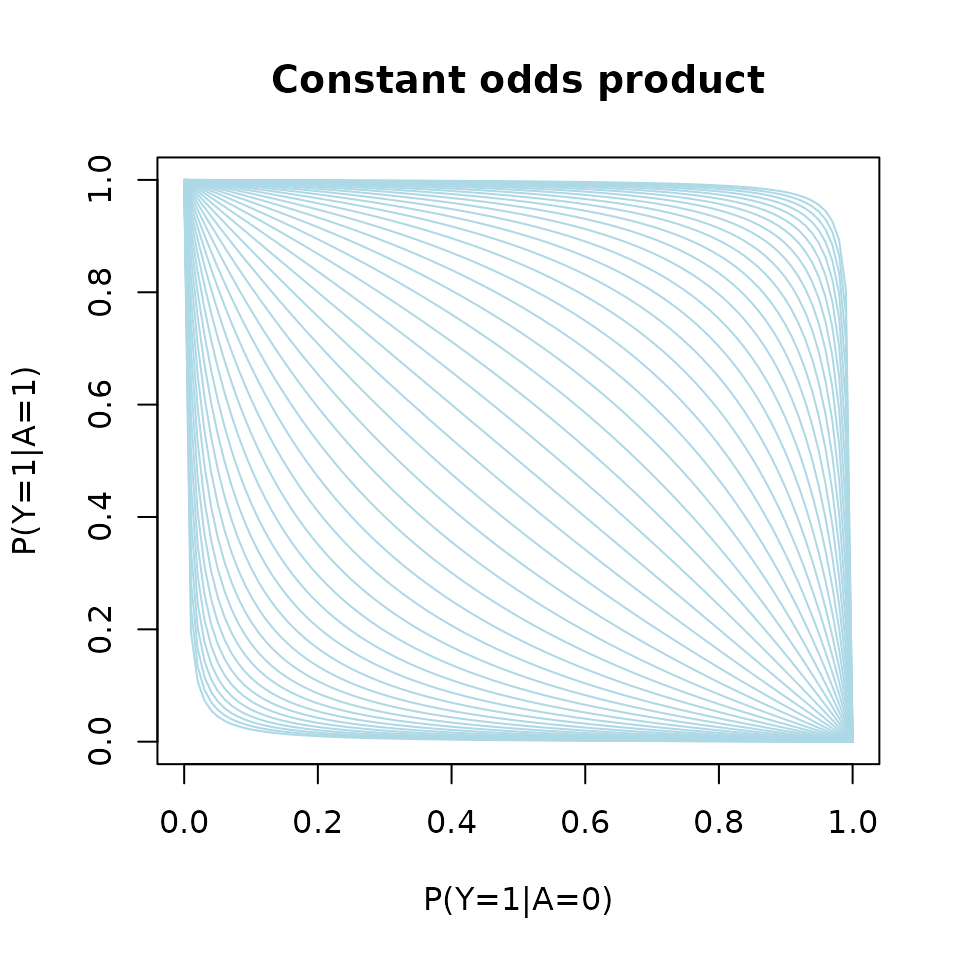

Estimating a relative risk or risk difference with a binary exposure
Klaus Kähler Holst
2020-05-12
Source:vignettes/riskregression.Rmd
riskregression.RmdIntroduction
Let \(Y\) be a binary response, \(A\) a binary exposure, and \(V\) a vector of covariates.

DAG for the statistical model with the dashed edge representing a potential interaction between exposure \(A\) and covariates \(V\).
In a common setting, the main interest lies in quantifying the treatment effect, \(\nu\), of \(A\) on \(Y\) adjusting for the set of covariates, and often a standard approach is to use a Generalized Linear Model (GLM):
\[g\{ E(Y\mid A,V) \} = A\nu^tW + \underset{\mathrm{nuisance}}{\mu^tZ}\]
with link function \(g\), and \(W = w(V)\), \(Z= v(V)\) known vector functions of \(V\).
The canonical link (logit) leads to nice computational properties (logistic regression) and parameters with an odds-ratio interpretation. But ORs are not collapsible even under randomization. For example
\[ E(Y\mid X) = E[ E(Y\mid X,Z) \mid X ] = E[\operatorname{expit}( \mu + \alpha X + \beta Z ) \mid X] \neq \operatorname{expit}[\mu + \alpha X + \beta E(Z\mid X)], \]
When marginalizing we leave the class of logistic regression. This non-collapsibility makes it hard to interpret odds-ratios and to compare results from different studies
Relative risks (and risk differences) are collapsible and generally considered easier to interpret than odds-ratios. Richardson et al (JASA, 2017) proposed a regression model for a binary exposures which solves the computational problems and need for parameter contraints that are associated with using for example binomial regression with a log-link function (or identify link for the risk difference) to obtain such parameter estimates. In the following we consider the relative risk as the target parameter
\[ \mathrm{RR}(v) = \frac{P(Y=1\mid A=1, V=v)}{P(Y=1\mid A=0, V=v)}. \]
Let \(p_a(V) = P(Y \mid A=a, V), a\in\{0,1\}\), the idea is then to posit a linear model for \[ \theta(v) = \log \big(RR(v)\big) \], i.e., \[\log \big(RR(v)\big) = \alpha^Tv,\]
and a nuisance model for the odds-product \[ \phi(v) = \log\left(\frac{p_{0}(v)p_{1}(v)}{(1-p_{0}(v))(1-p_{1}(v))}\right) \]
noting that these two parameters are variation independent as illustrated by the below L’Abbé plot.
p0 <- seq(0,1,length.out=100) p1 <- function(p0,op) 1/(1+(op*(1-p0)/p0)^-1) plot(0, type="n", xlim=c(0,1), ylim=c(0,1), xlab="P(Y=1|A=0)", ylab="P(Y=1|A=1)", main="Constant odds product") for (op in exp(seq(-6,6,by=.25))) lines(p0,p1(p0,op), col="lightblue")

p0 <- seq(0,1,length.out=100) p1 <- function(p0,rr) rr*p0 plot(0, type="n", xlim=c(0,1), ylim=c(0,1), xlab="P(Y=1|A=0)", ylab="P(Y=1|A=1)", main="Constant relative risk") for (rr in exp(seq(-3,3,by=.25))) lines(p0,p1(p0,rr), col="lightblue")

Similarly, a model can be constructed for the risk-difference on the following scale
\[\theta(v) = \operatorname{arctanh} \big(RD(v)\big).\]
Simulation
First the targeted package is loaded
library(targeted)
This automatically imports lava (CRAN) which we can use to simulate from the Relative-Risk Odds-Product (RR-OP) model.
m <- lvm(a ~ x, lp.target ~ 1, lp.nuisance ~ x+z) m <- binomial.rr(m, response="y", exposure="a", target.model="lp.target", nuisance.model="lp.nuisance")
The lvm call first defines the linear predictor for the exposure to be of the form
\[\mathrm{LP}_A := \mu_A + \alpha X\]
and the linear predictors for the /target parameter/ (relative risk) and the /nuisance parameter/ (odds product) to be of the form
\[\mathrm{LP}_{RR} := \mu_{RR},\]
\[\mathrm{LP}_{OP} := \mu_{OP} + \beta_x X + \beta_z Z.\]
The covariates are by default assumed to be independent and standard normal \(X, Z\sim\mathcal{N}(0,1)\), but their distribution can easily be altered using the lava::distribution method.
The binomial.rr function
args(binomial.rr) #> function (x, response, exposure, target.model, nuisance.model, #> exposure.model = binomial.lvm(), ...) #> NULL
then defines the link functions, i.e.,
\[\operatorname{logit}(E[A\mid X,Z]) = \mu_A + \alpha X,\]
\[\operatorname{log}(E[Y\mid X,Z, A=1]/E[Y\mid X, A=0]) = \mu_{RR},\]
\[\operatorname{log}\{p_1(X,Z)p_0(X,Z)/[(1-p_1(X,Z))(1-p_0(X,Z))]\} = \mu_{OP}+\beta_x X + \beta_z Z\]
with \(p_a(X,Z)=E(Y\mid A=a,X,Z)\).
The risk-difference model with the RD parameter modeled on the \(\operatorname{arctanh}\) scale can be defined similarly using the binomial.rd method
args(binomial.rd) #> function (x, response, exposure, target.model, nuisance.model, #> exposure.model = binomial.lvm(), ...) #> NULL
We can inspect the parameter names of the modeled
coef(m) #> m1 m2 m3 p1 p2 #> "a" "lp.target" "lp.nuisance" "a~x" "lp.nuisance~x" #> p3 p4 #> "lp.nuisance~z" "a~~a"
Here the intercepts of the model are simply given the same name as the variables, such that \(\mu_A\) becomes a, and the other regression coefficients are labeled using the “~”-formula notation, e.g., \(\alpha\) becomes a~x.
Intercepts are by default set to zero and regression parameters set to one in the simulation. Hence to simulate from the model with \((mu_A, \mu_{RR}, \mu_{OP}, \alpha, \beta_x, \beta_z)^T = (-1,1,-2,2,1,1)^T\), we define the parameter vector p given by
p <- c('a'=-1, 'lp.target'=1, 'lp.nuisance'=-1, 'a~x'=2)
and then simulate from the model using the sim method
d <- sim(m, 1e4, p=p, seed=1) head(d) #> a x lp.target lp.nuisance z y #> 1 0 -0.6264538 1 -2.4307854 -0.8043316 0 #> 2 0 0.1836433 1 -1.8728823 -1.0565257 0 #> 3 0 -0.8356286 1 -2.8710244 -1.0353958 0 #> 4 1 1.5952808 1 -0.5902796 -1.1855604 1 #> 5 0 0.3295078 1 -1.1709317 -0.5004395 1 #> 6 0 -0.8204684 1 -2.3454571 -0.5249887 0
Notice, that in this simulated data the target parameter \(\mu_{RR}\) has been set to lp.target = 1.
Estimation
MLE
We start by fitting the model using the maximum likelihood estimator.
args(riskreg_mle) #> function (y, a, x1, x2 = x1, weights = rep(1, length(y)), std.err = TRUE, #> type = "rr", start = NULL, control = list(), ...) #> NULL
The riskreg_mle function takes vectors/matrices as input arguments with the response y, exposure a, target parameter design matrix x1 (i.e., the matrix \(W\) at the start of this text), and the nuisance model design matrix x2 (odds product).
We first consider the case of a correctly specified model, hence we do not consider any interactions with the exposure for the odds product and simply let x1 be a vector of ones, whereas the design matrix for the log-odds-product depends on both \(X\) and \(Z\)
x1 <- model.matrix(~1, d) x2 <- model.matrix(~x+z, d) fit1 <- with(d, riskreg_mle(y, a, x1, x2, type="rr")) fit1 #> Estimate Std.Err 2.5% 97.5% P-value #> p1 0.9512 0.03319 0.8862 1.0163 1.204e-180 #> p2 -1.0610 0.05199 -1.1629 -0.9591 1.377e-92 #> p3 1.0330 0.05944 0.9165 1.1495 1.230e-67 #> p4 1.0421 0.05285 0.9386 1.1457 1.523e-86
The parameters are presented in the same order as the columns of x1and x2, hence the target parameter estimate is in the first row
estimate(fit1, keep=1) #> Estimate Std.Err 2.5% 97.5% P-value #> p1 0.9512 0.03336 0.8858 1.017 7.159e-179
DRE
We next fit the model using a double robust estimator (DRE) which introduces a model for the exposure \(E(A=1\mid V)\) (propensity model). The double-robustness stems from the fact that the this estimator remains consistent in the union model where either the odds-product model or the propensity model is correctly specified. With both models correctly specified the estimator is efficient.
with(d, riskreg_fit(y, a, target=x1, nuisance=x2, propensity=x2, type="rr")) #> Estimate Std.Err 2.5% 97.5% P-value #> p1 0.9372 0.0339 0.8708 1.004 3.004e-168
The usual /formula/-syntax can be applied using the riskreg function. Here we illustrate the double-robustness by using a wrong propensity model but a correct nuisance paramter (odds-product) model:
riskreg(y~a, nuisance=~x+z, propensity=~z, data=d, type="rr") #> Estimate Std.Err 2.5% 97.5% P-value #> (Intercept) 0.9511 0.03333 0.8857 1.016 4.547e-179
Or vice-versa
riskreg(y~a, nuisance=~z, propensity=~x+z, data=d, type="rr") #> Estimate Std.Err 2.5% 97.5% P-value #> (Intercept) 0.9404 0.03727 0.8673 1.013 1.736e-140
whereas the MLE in this case yields a biased estimate of the relative risk:
fit2 <- with(d, riskreg_mle(y, a, x1=model.matrix(~1,d), x2=model.matrix(~z, d))) estimate(fit2, keep=1) #> Estimate Std.Err 2.5% 97.5% P-value #> p1 1.243 0.02778 1.189 1.298 0
Interactions
The more general model where \[\log RR(V) = A \alpha^TV\] for a subset \(V\) of the covariates can be estimated using the target argument:
fit <- riskreg(y~a, target=~x, nuisance=~x+z, data=d) fit #> Estimate Std.Err 2.5% 97.5% P-value #> (Intercept) 0.93479 0.03528 0.8656 1.00392 9.885e-155 #> x -0.02035 0.05259 -0.1234 0.08273 6.988e-01
As expected we do not see any evidence of an effect of \(X\) on the relative risk with the 95% confidence limits clearly overlapping zero.
Note, that when the propensity argument is omitted as above, the same design matrix is used for both the odds-product model and the propensity model.
Risk-difference
The syntax for fitting the risk-difference model is similar. To illustrate this we simulate some new data from this model
m2 <- binomial.rd(m, response="y", exposure="a", target.model="lp.target", nuisance.model="lp.nuisance") d2 <- sim(m2, 1e4, p=p)
And we can then fit the DRE with the syntax
riskreg(y~a, nuisance=~x+z, data=d2, type="rd") #> Estimate Std.Err 2.5% 97.5% P-value #> (Intercept) 1.001 0.02146 0.9591 1.043 0
Influence-function
The DRE is a regular and asymptotic linear (RAL) estimator, hence \[\sqrt{n}(\widehat{\alpha}_{\mathrm{DRE}} - \alpha) = \frac{1}{\sqrt{n}}\sum_{i=1}^{n} \phi_{\mathrm{eff}}(Z_{i}) + o_{p}(1)\] where \(Z_i = (Y_i, A_i, V_i), i=1,\ldots,n\) are the i.i.d. observations and \(\phi_{\mathrm{eff}}\) is the influence function.
The influence function can be extracted using the iid method
head(iid(fit)) #> (Intercept) x #> [1,] 6.283220e-05 -9.100827e-05 #> [2,] 1.454403e-04 2.519752e-06 #> [3,] 3.801770e-05 -6.489627e-05 #> [4,] 5.305137e-06 8.331301e-05 #> [5,] -7.976362e-04 -2.798120e-04 #> [6,] 5.316751e-05 -8.983366e-05
SessionInfo
sessionInfo() #> R Under development (unstable) (2020-05-12 r78427) #> Platform: x86_64-pc-linux-gnu (64-bit) #> Running under: Ubuntu 16.04.6 LTS #> #> Matrix products: default #> BLAS: /home/travis/R-bin/lib/R/lib/libRblas.so #> LAPACK: /home/travis/R-bin/lib/R/lib/libRlapack.so #> #> locale: #> [1] LC_CTYPE=en_US.UTF-8 LC_NUMERIC=C #> [3] LC_TIME=en_US.UTF-8 LC_COLLATE=en_US.UTF-8 #> [5] LC_MONETARY=en_US.UTF-8 LC_MESSAGES=en_US.UTF-8 #> [7] LC_PAPER=en_US.UTF-8 LC_NAME=C #> [9] LC_ADDRESS=C LC_TELEPHONE=C #> [11] LC_MEASUREMENT=en_US.UTF-8 LC_IDENTIFICATION=C #> #> attached base packages: #> [1] stats graphics grDevices utils datasets methods base #> #> other attached packages: #> [1] targeted_0.1.1 lava_1.6.7 #> #> loaded via a namespace (and not attached): #> [1] Rcpp_1.0.4.6 knitr_1.28 magrittr_1.5 #> [4] splines_4.1.0 MASS_7.3-51.6 lattice_0.20-41 #> [7] R6_2.4.1 rlang_0.4.6 optimx_2020-4.2 #> [10] stringr_1.4.0 tools_4.1.0 grid_4.1.0 #> [13] xfun_0.13 lambda.r_1.2.4 futile.logger_1.4.3 #> [16] htmltools_0.4.0 yaml_2.2.1 survival_3.1-12 #> [19] assertthat_0.2.1 digest_0.6.25 rprojroot_1.3-2 #> [22] numDeriv_2016.8-1.1 pkgdown_1.5.1 crayon_1.3.4 #> [25] Matrix_1.2-18 formatR_1.7 codetools_0.2-16 #> [28] futile.options_1.0.1 fs_1.4.1 memoise_1.1.0 #> [31] evaluate_0.14 rmarkdown_2.1 stringi_1.4.6 #> [34] compiler_4.1.0 desc_1.2.0 backports_1.1.6